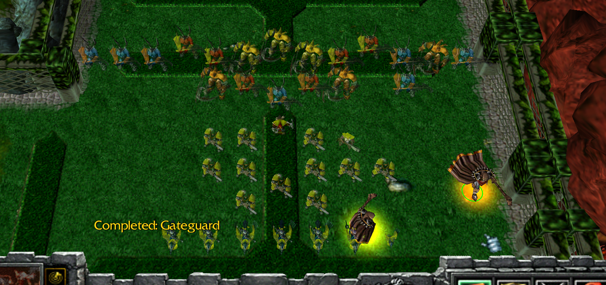

Generally, I don't recommend going Gateguards alone; it's a bad unit. But if you do want to play Gateguards, this is approximately how I'd do it. although i do prefer making more small gates than i show in this guide.
If you have Speed Witch Doctor, Troll, Lifesteal, or some units to go behind Gateguards, it's generally more doable.
This guide is meant to give you ideas on how to hold Level 10 and build in a straight line. Honestly, this guide sucks, but here it is.
Method 1: No stack (Method 2 Recommended)
Level 1-3: Building Up
- Level 1: Start with 5 Gateguards (400 value). If you're feeling risky, place 4 Gateguards at the back instead (leaks if they send). Push 2-0.
- Level 2: 6 Gateguards (480 value). Push as much as possible while maintaining 6 Gateguards.
- Level 3: 9 Gateguards (720 value). Aim for 8-3 or 7-3 depending on your gold. Build a farm if needed.
Level 4: Preparing for Ranged Levels
- Start upgrading 1 Gateguard.
- When the level starts, push with taunts to make it easier.
- Follow this for ranged levels: 4, 8, 12, 16.
- Push 9-4, but don’t go further—you need to handle upcoming levels.
Level 5-7: Strengthening Defenses
- Fully upgrade Gateguards.
- If you have extra gold, prioritize upgrading to the 150 gold upgrade or adding an 80 gold Gateguard.
- If you suspect enemy skips, go straight for Harbinger/Herald upgrades.
Level 7+: Finalizing Before 10
- Push comfortably: 9-7, 9-8, or 9-6 are all viable.
- Keep upgrading to max tier before Level 10.
- Expect to leak at Level 10 anyway because Gateguards are a terrible unit.
Post-Level 10 Advantage
If you follow this method, reposition units for Level 14 to gain a slight advantage.
Method 2: Preparing for Stack at Level 10
Early Setup (Level 1-4)
- Level 1: 5 Gateguards.
- Level 2: 6 Gateguards.
- Level 3: 9 Gateguards.
- Level 4: Stay 9-4, push with the rest, and position units forward.
Level 5-7: Upgrading for Midgame
- Levels 5-6: Get Heralds.
- Level 7: Build a Harbinger (150 gold upgrade, not full upgrade).
- If your teammate can save a full sell for you, push 9-9 to 9-10.
Level 8-10: Strategic Positioning
- Level 8: Continue getting Harbingers and push units forward.
- Level 9: Build max-upgrade units on your teammate’s side.
- Level 10: Move 2 Heralds and Harbingers to your teammate’s side. Your teammate will hold.

Post-Level 10: Recovering and Repositioning
- After Level 10, sell the 2 Heralds you moved since they can’t move again.
- Move the Harbingers back to your spawn.
- Use gold from selling Heralds + income to upgrade the stuck Harbingers and move back to your spawn so you can hold 12.